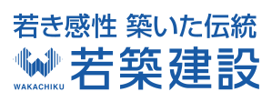
WORK WITH US / RECRUITMENT 2027-2028
年齢も経験も違う人たちが、
同じ現場で、同じ景色を見ている。
何気ない一杯の時間にも、
積み重ねてきた関係がある。
図面の先にあるものを、
先輩たちは黙って教えてくれる。
指し示す先に、
まだ誰も見たことのない景色がある。
小さな問いの積み重ねが、
確かな仕事をつくっていく。
経験は、ひとりで抱えるものではなく、
分け合うものだから。
安全確認、測量、操船——一つひとつの小さな動きを、支え合いながら。
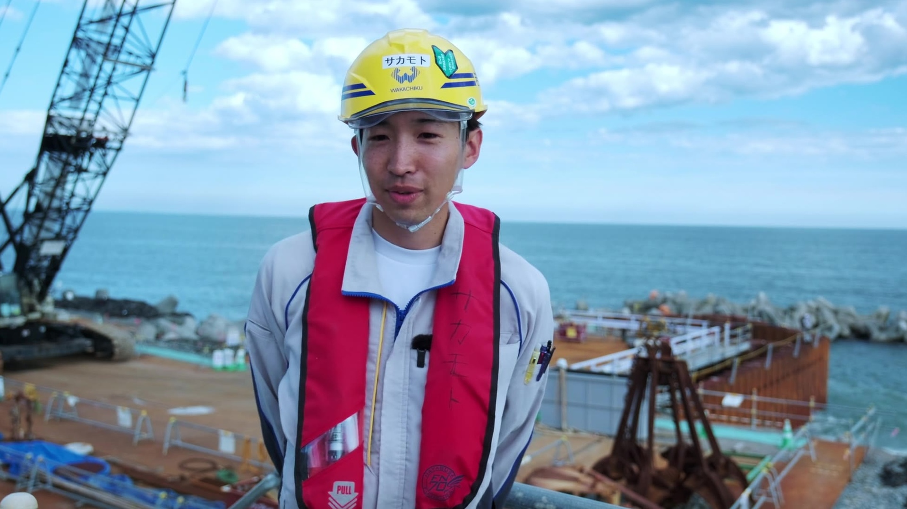
若築建設にとって、この二つは矛盾しません。135年、官公庁からの信頼を積み重ねてきた堅実さ。そして現場では、若い世代が自分の判断で挑戦できる自由。まだ見ぬ港を拓く仕事には、その両方が必要です。
「(参考値)」の2項目は、全社員を対象とした公式統計そのものではなく、公開データから算出した目安値です。正式データが提供され次第、確定値に差し替えます。
※写真は実際の現場で働く社員のものですが、発言はコピー案のイメージです。実際の社員インタビューに差し替え予定（写真の人物と発言内容は結びついていません）
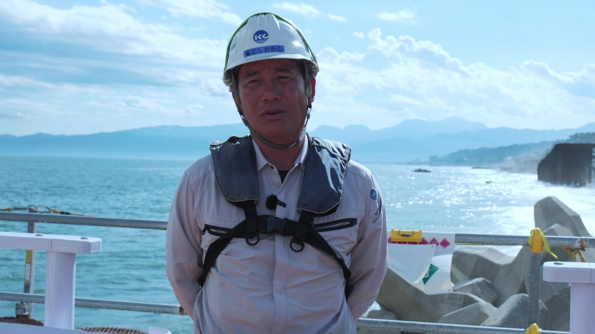
現場監督（イメージ）
埋立地に最初の足跡を残す瞬間が、この仕事の醍醐味です。（コピー案）
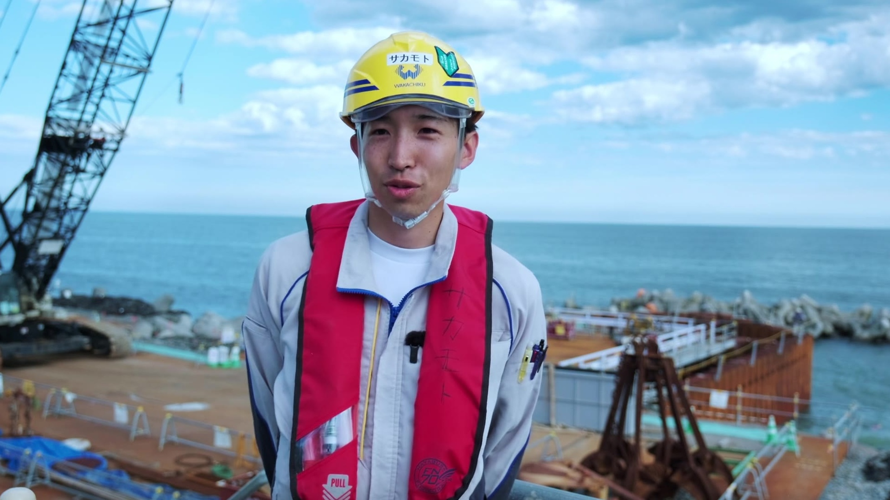
技術職（イメージ）
技術は言葉より先に、手から手へ伝わっていきます。（コピー案）
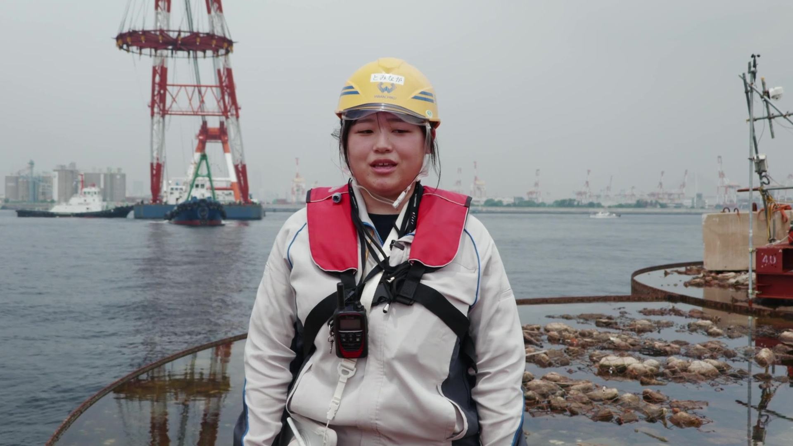
事務系総合職（イメージ）
現場を陰で支える仕事にも、確かな手ごたえがあります。（コピー案）
実際に現場で働くメンバー（新本牧・湘南）
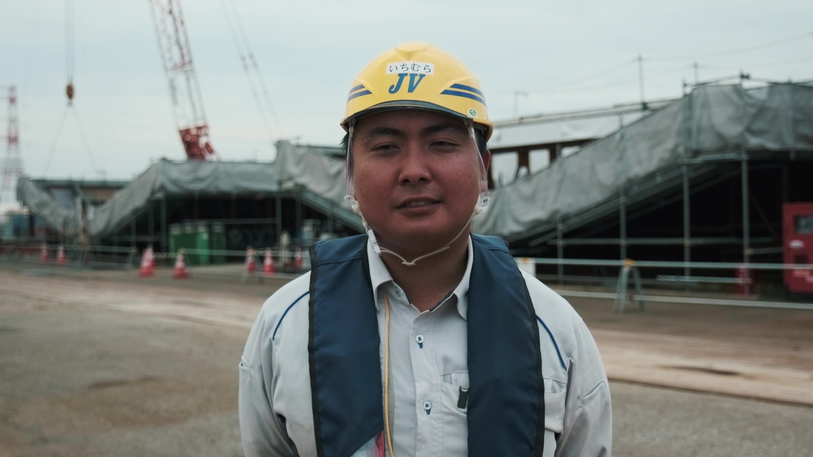
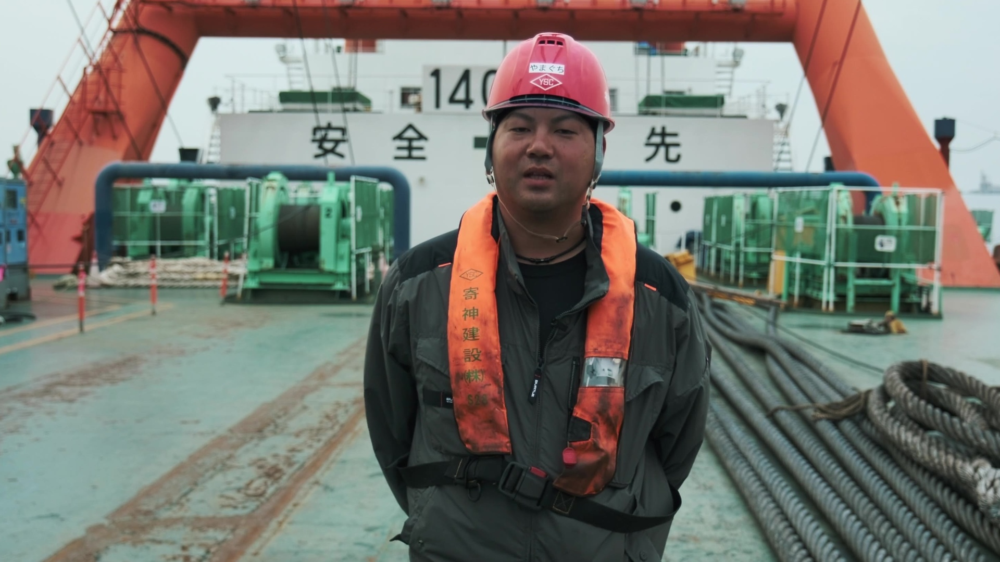
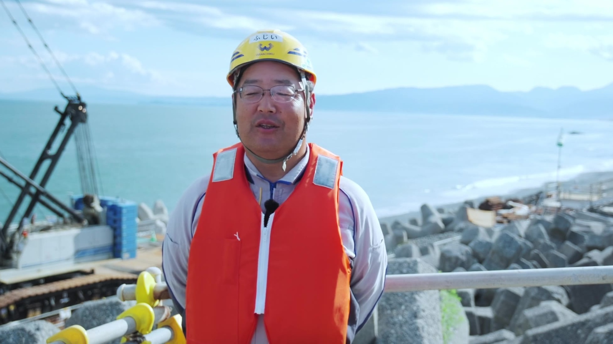
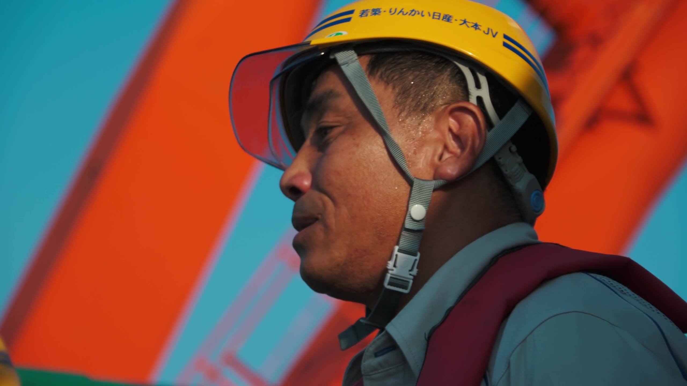
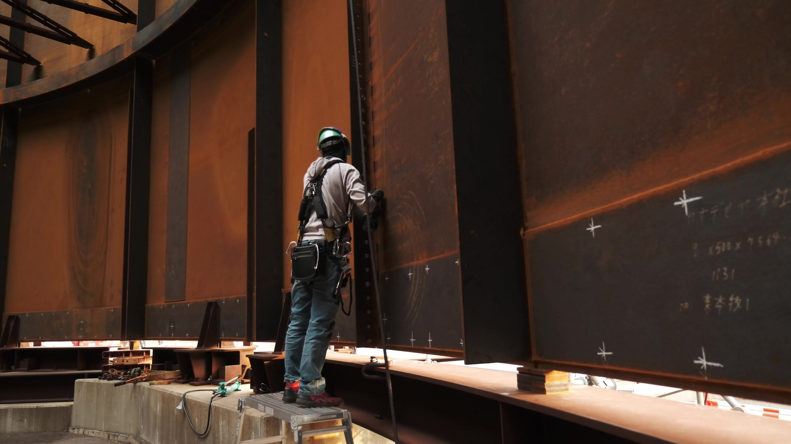
一つの役割だけをこなすのではなく、幅広い仕事から何でも経験できるところが若築建設のいいところ。若手でも大きな仕事に携われる機会があります。
※ステップ名はイメージです。正式なキャリアパス制度は教育研修制度ページをご参照ください
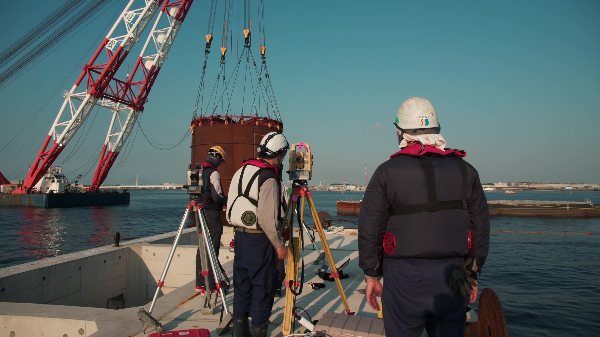
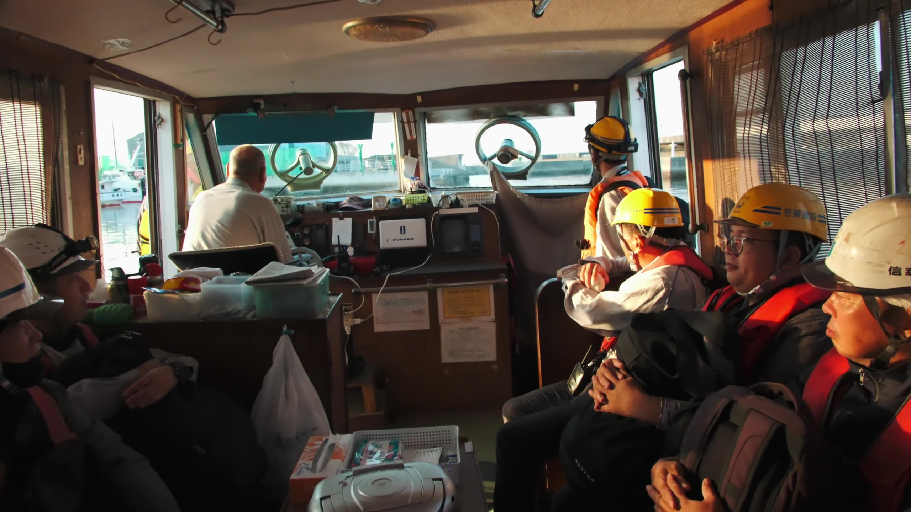
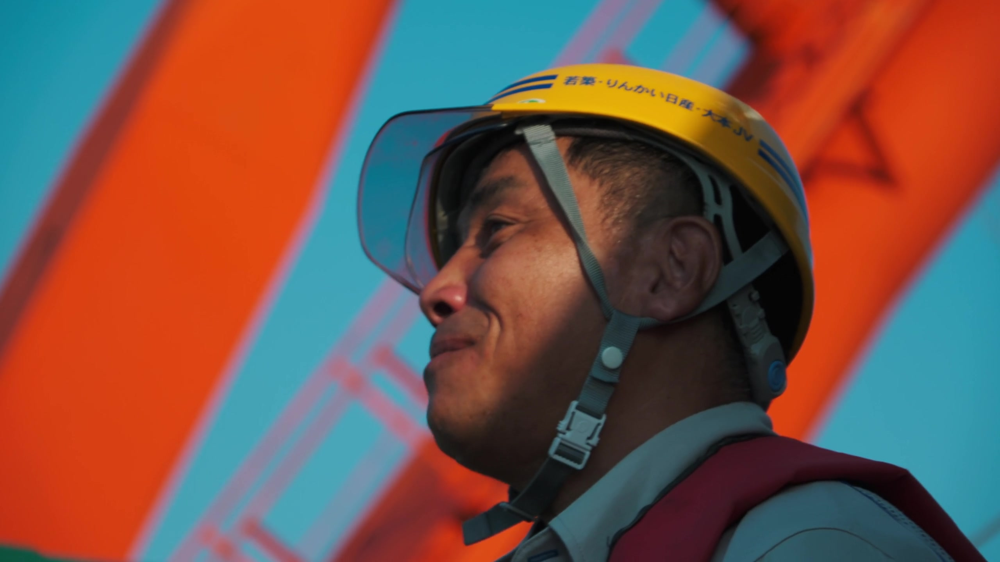
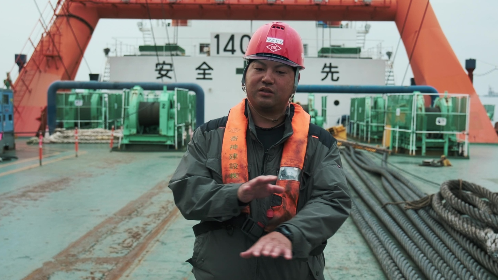
移動の船の中でも、現場に向かう朝でも、そばには一緒に働く仲間がいます。年齢も経験も違う人たちが、同じ潮風の中で肩を並べる。若築建設の現場は、そんな家族のような温かさで支えられています。
※若築建設 公式採用サイトの募集要項（新卒）・福利厚生ページに基づく内容です（2027年3月卒業見込みの方を対象とした新卒採用の要項）
| 対象 | 2027年3月卒業見込みの方／2028年3月卒業見込みの方／※既卒の方／中途採用 |
|---|---|
| 募集する人・職務内容 | 技術職・事務職（学歴・学部・学科不問、人物重視の選考） 【総合職】土木：施工管理・設計・積算等／建築：施工管理・意匠構造設計等／機電：船舶技術の企画・開発等／事務：総務・人事・経営企画・経理・工務・営業等 【専任職】BIM/CIM：3Dモデル作成等／ICT：ICT機器開発・施工支援等 |
| 初任給 | 2026年4月から （総合職）修士了 320,000円／大学卒・高専専攻科了 300,000円／高専本科卒 283,000円 （専任職）修士了 278,000円／大学卒・高専専攻科了 260,000円／高専本科卒 245,000円 |
| 諸手当・昇給・賞与 | 通勤手当・住宅手当・時間外手当・家族手当・寒冷地手当・技術手当・役職手当等 昇給：毎年4月／賞与：年2回（6月・11月）※2024年度は本給の7.7ヶ月分の支給実績 |
| 勤務地・勤務時間 | 本社（東京）および支店・営業所・作業所・海外事業所 9:00〜18:00（本社・支店・営業所）／8:00〜17:00（作業所）※いずれも休憩1時間を含む |
| 休日・休暇 | 土曜・日曜・祝日・夏期休暇・年末年始・創立記念日・有給休暇（年間20日付与）・子の看護等休暇・介護休暇・ウェルネス休暇・エル休暇・結婚休暇・忌引休暇・永年勤続休暇等 |
| 住宅・福利厚生 | 独身寮（月額1万円、家具・家電付、初期費用・水光熱費会社負担）／借上社宅（敷金・礼金・仲介手数料・家賃の一部を会社負担）／財形貯蓄・従業員持株会・企業年金・共済会・GLTD保険・帰省旅費・提携ジム等 |
| 教育・資格支援 | 新入社員研修・フォローアップ研修・階層別研修等の教育制度あり／技術士・一級建築士等33資格の取得時に最大100万円の資格取得奨励金を支給 |
| 採用予定数 | （総合職）土木職40名・建築職30名・機電職2名・事務職8名 計80名 （専任職）BIM/CIM職 若干名・ICT職 若干名 計5名 ※卒業区分（高校卒・高専卒・大学卒・大学院卒）は不問 |
| 応募方法・選考プロセス | 技術職（理系）：自由応募・学校推薦のいずれも可／事務職（文系）：自由応募のみ マイページからエントリー→会社訪問・セミナー参加（任意）→書類選考（エントリーシート・適性検査）→一次面接→最終面接→内々定 |
※若築建設 公式採用サイトの募集要項・福利厚生・教育研修制度ページに基づく内容です
文系出身でも応募できますか？
はい。新卒採用は学歴・学部・学科を問わない人物重視の選考です。総合職には土木・建築・機電に加えて事務（総務・人事・経営企画・経理・工務・営業）の職種があり、事務職は自由応募で受け付けています。
転勤はありますか？
あります。本社（東京）のほか、全国の支店・営業所・作業所、および海外事業所で勤務いただく可能性があります。転勤時には特別休暇制度もあります。
未経験・無資格でも技術職に就けますか？
新卒採用の技術職に入社時点での資格要件はありません。新入社員研修をはじめ、半年後のフォローアップ研修、約6年目のリーダー研修など、段階的な教育制度の中で実務を身につけていきます。
資格取得の支援制度はありますか？
あります。技術士・一級建築士・コンクリート診断士など33の資格取得時に最大100万円の資格取得奨励金を支給するほか、一級土木施工管理技士の合格支援プログラム（WEBラーニング＋短期集中講座）、一級建築士の受験費用貸付（合格で返済免除）などの制度があります。
住まいのサポートはありますか？
独身者向けの寮（家具・家電付、初期費用・水光熱費は会社負担、寮費は月額1万円）と、家族持ちの方向けの借上社宅（敷金・礼金・仲介手数料は会社負担、家賃も地域により月額30,000〜77,000円を会社が負担）を用意しています。
産休・育休や時短勤務など、子育てとの両立はできますか？
若築建設は「くるみん認定企業」です。育児短時間勤務、始業・終業時刻を調整できる時差出勤制度、最長で子が2歳になるまでの育児休業、子の看護等休暇など、子育てと仕事を両立できる制度を整えています。
有給休暇はどのくらい取得できますか？
2026年より、正社員は入社1年目から毎年4月1日に年間20日の有給休暇が付与され、半日単位での取得も可能です。未消化分は翌年度への繰り越しもできます。2024年度の有給休暇取得率は50.2%という実績があります。
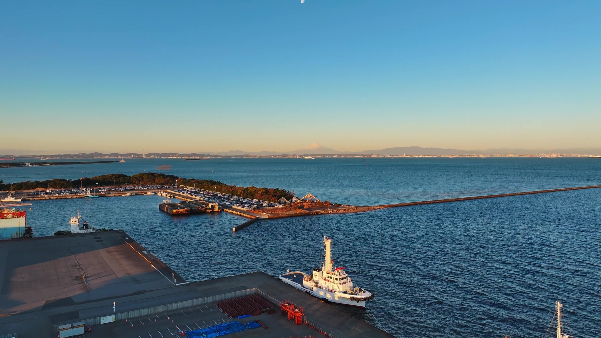